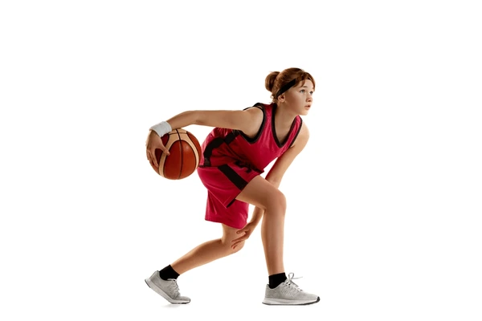
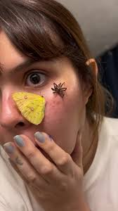

Kimberly Vásquez
Descripción
Soy Kimberly, soy un poquito enojada, me gustan mucho los animales. También me gusta el fútbol y me gustan las actividades deportivas.
Contacto
- Teléfono: 3049 0463
- Facebook: Kimberly Vásquez
- TikTok: esmeralda
Datos personales
- Fecha de nacimiento: 23/09/2010
- Lugar de residencia: Aldea Galvez, Colonia Guzmán
- Lugar de nacimiento: Coatepeque
Hobbies

Fobias

Comidas favoritas
Lista de preferencias
- Equipo: Barcelona
- Jugador: Messi
- Época: Otoño
- Color: Negro
- Animal: Perro
Datos académicos
- Segundo básico - 2025 - Aldea Galvez
- Primero básico - 2024 - Aldea Galvez
- Sexto primaria - 2023 - Aldea Galvez
- Quinto primaria - 2022 - Aldea Galvez
- Cuarto primaria - 2021 - Aldea Galvez
- Tercero primaria - 2020 - Aldea Galvez
- Segundo primaria - 2019 - Aldea Galvez
- Primero primaria - 2018 - Aldea Galvez